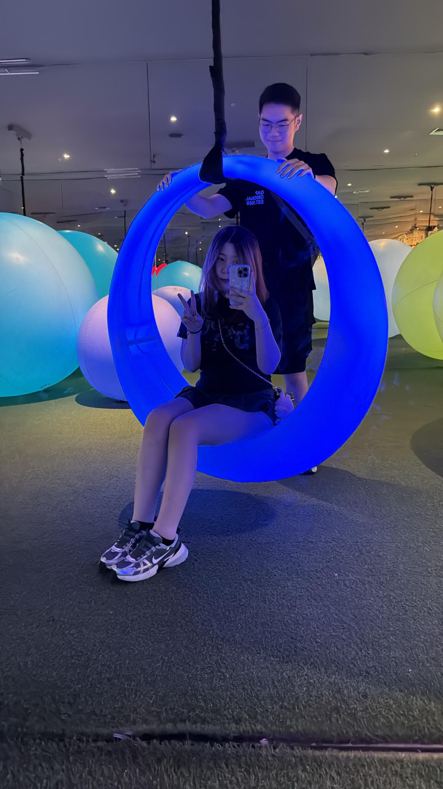

--Our Love Journey ❤
Press "↓" button to go next
I recall the moment our eyes did meet,
Where my heart began its steady beat.
In that glance, our souls found light,
Kindling a love that felt so right.
We shared a smile, soft and bright,
Promising hope through day and night.
Each word we spoke, gentle and clear,
Drew our hearts ever close and near.
Our laughter rang, wild and free,
A sweet duet for you and me.
Hand in hand, we walked with pride,
Trust and love ever our guide.
Whispered secrets and tender dreams,

Wove our bond with gentle seams.
next line
In quiet moments, calm and true,
I found my world aligned with you.
Every step taken side by side,
Filled my soul with joy and pride.

Even when storms darkened our way,
Our love shone bright as a sunny day.
Each challenge we met with hearts held tight,
Strengthening our bond with shared light.
With every dawn and fading sun,
Our love journey had just begun.
The touch of your hand, so soft and kind,
Brought a peace I'd longed to find.
In every glance, a silent plea,
That our love forever would be free.

Soft whispers carried on the night air,

Spoke of dreams beyond compare.
Our hearts danced to a gentle tune,
Under the glow of a tender moon.
The winding path we tread so true,

Was painted with hues of
me
&
you
In every breath and quiet sigh,
Our spirits soared, reaching high.
Moments of silence, deep and steep,
Held promises for us to keep.
Each sunrise brought a brand-new start,
Filling hope deep within our heart.
Through trials faced and battles won,
Our love shone like the morning sun.
With every heartbeat,
our souls entwine,
Crafting a bond so pure, and divine.
In your embrace, I found my home,
A refuge where I am never alone.
Our journey, gentle yet so strong,
Unfolds like verses in our song.
Each shared moment, pure and true,
Echoed the promise I found in you.

Every day, our story unfolds anew,
In verses that sing of love so true.
Forever entwined, our spirits soar,
In love's soft rhythm forevermore.
I Love You With all My Heart
-- press “Esc" to see the heart